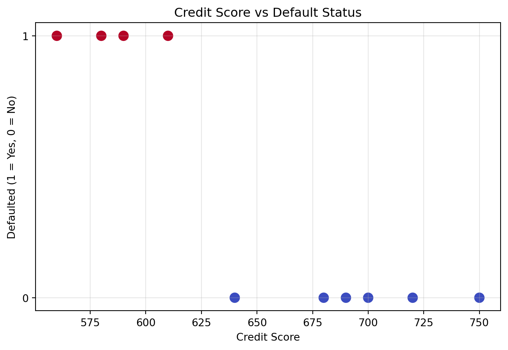

Data Cleaning to Agentic AI — A Banking Industry Walkthrough
code
data-cleaning
machine-learning
agentic-ai
Author
Ashwin Bijur
Published
January 7, 2026
Modern banking runs on data however before AI can detect fraud, score credit, or automate decisions that data must be cleaned, structured, and made trustworthy.
From there, we move into machine learning, artificial intelligence, and finally agentic AI to see that systems that don’t just predict but act.
This blog walks through that journey using small, realistic datasets from the banking world, with hands‑on Python examples.
Data Cleaning: The Foundation of Everything
The journey always begins with one unglamorous but essential step: data cleaning. The action of cleaning data may be technical however each decision needs to be backed by business logic to create a worthy foundation for future predictions.
In the below code snippet, lets import some data and identify the messy data and mark it as “NaN”. We can then apply business decisions on handling each “NaN”.
import pandas as pdimport numpy as npdf = pd.read_csv("transactions.csv")# Remove negative amountsdf['amount'] = df['amount'].apply(lambda x: np.nan if x isNoneor x <0else x)# Fill missing merchantsdf['merchant'] = df['merchant'].fillna("Unknown")# Replace zero amounts with medianmedian_amt = df['amount'].median()df['amount'] = df['amount'].replace(0, median_amt)# Drop duplicatesdf = df.drop_duplicates()print(df)
Let’s say we have some historic data on customers who failed to pay back their loans.
Even though we followed the underwriting process, we still incurred losses and now the Head of Credit wants deeper insight into why this happened and how we can minimize future risk.
In a real banking environment, dozens of features influence creditworthiness: income stability, debt‑to‑income ratio, employment history, past delinquencies, and more. But every strong analytical story starts with a simple, intuitive baseline.
So let’s begin with the most widely used signal in consumer lending - Credit Score.
And before we build anything complex, we ask a simple question: Can a single feature already give us a meaningful prediction of default risk?
import matplotlib.pyplot as plt# Read the CSVdf = pd.read_csv("credit-score.csv")# Scatter plotplt.figure(figsize=(8,5))plt.scatter(df['credit_score'], df['defaulted'], c=df['defaulted'], cmap='coolwarm', s=80)plt.title("Credit Score vs Default Status")plt.xlabel("Credit Score")plt.ylabel("Defaulted (1 = Yes, 0 = No)")plt.yticks([0, 1])plt.grid(alpha=0.3)plt.show()

In the graph we see lower scores lead to defaults however in real world displaying it on a graph may not be feasible to we take help from statistics to test our theory. The below piece of code is using past data to identify correlation between credit score and default and building a predictive model for future cases. We can also check the accuracy of the prediction.
from sklearn.model_selection import train_test_splitfrom sklearn.linear_model import LogisticRegressiondf = pd.read_csv("credit-score.csv")X = df[['credit_score']]y = df['defaulted']X_train, X_test, y_train, y_test = train_test_split(X, y, test_size=0.3, random_state=42)model = LogisticRegression()model.fit(X_train, y_train)print("Accuracy:", model.score(X_test, y_test))print("Prediction for score 600:", model.predict(pd.DataFrame({"credit_score": [600]})))print("Prediction for score 700:", model.predict(pd.DataFrame({"credit_score": [700]})))
Accuracy: 0.6666666666666666
Prediction for score 600: [1]
Prediction for score 700: [0]
We were dealing with structured data thus far - now lets manipulate some unstructured data.
One can say that AI doesn’t begin with the model but it begins the moment you convert human messiness into machine‑readable meaning.
Customer support logs are a goldmine but only after you extract Sentiment, Emotion, Intensity, Topic, Intent, Resolution status, Customer trajectory etc. That’s the moment unstructured text becomes intelligence. Lets create a simple NLP sentiment encoding to understand this.
import pandas as pd import numpy as npdf = pd.read_csv("sentiments.csv")df['sentiment_encoded'] = df['sentiment'].map({"Negative": -1,"Neutral": 0,"Positive": 1})print(df.head())
You’ve just transformed human emotion into numerical signals that downstream models can reason about churn prediction, escalation likelihood, agent performance scoring, issue severity ranking, customer lifetime value risk, operational bottleneck,detection etc
A model can’t reason about “frustrated” but it can reason about -1.
A customer saying “My card keeps getting declined and I’m really annoyed” becomes:
Now lets create a simple agentic ai model that will monitor transactions continuously and it will send an “alert” when it finds a transaction that has a risk of being fraudulent. To keep it simple we are using a logistic regression model with a single feature “amount” however in real life one can expect a multivariate model with multiple features and multiple predictions. The model will independently flag and send alerts for transactions with risk higher than the defined threshold. For the alert we can further create a validation agent who will email a human for checks and approvals.
# This is the setupimport pandas as pdimport numpy as npfrom sklearn.linear_model import LogisticRegressionfrom IPython.display import clear_outputimport time# Creating synthetic transactions for simulationnp.random.seed(42)N =30df = pd.DataFrame({"id": np.arange(1, N+1),"amount": np.random.exponential(scale=2000, size=N),"merchant": np.random.choice(["Amazon", "Walmart", "Target", None], size=N)})# Output of incoming data displayeddf.head()# Train a Tiny Fraud Model.# create a binary label: 1 if amount > 3000, else 0df["label"] = (df["amount"] >3000).astype(int)# select/initialize a logistic regression modelmodel = LogisticRegression()# train the model using 'amount' as the only featuremodel.fit(df[["amount"]], df["label"])# Defining the agentclass FraudAgent:def__init__(self, model, threshold=0.7):# store the trained model and decision thresholdself.model = modelself.threshold = threshold# track the highest transaction ID already processedself.last_seen_id =0def observe(self, df):# select only new transactions with id > last_seen_idreturn df[df["id"] >self.last_seen_id]def clean(self, df):# remove invalid transactions (amount <= 0) df = df[df["amount"] >0]# fill missing merchant names with "Unknown" df["merchant"] = df["merchant"].fillna("Unknown")return dfdef score(self, df):# compute fraud risk using model's predicted probability df["risk"] =self.model.predict_proba(df[["amount"]])[:,1]return dfdef decide(self, df):# select transactions whose risk exceeds the thresholdreturn df[df["risk"] >self.threshold]def send_alert(self, row):# print an alert for a high‑risk transactionprint(f"[ALERT] id={row['id']} amount={row['amount']:.2f} risk={row['risk']:.2f}")def act(self, alerts):# send alerts for each flagged transactionfor _, row in alerts.iterrows():self.send_alert(row)# update last_seen_id to avoid reprocessingiflen(alerts) >0:self.last_seen_id = alerts["id"].max()def run(self, df):# step 1: get only new transactions new =self.observe(df)# step 2: clean and standardize the data cleaned =self.clean(new)# step 3: score transactions using the model scored =self.score(cleaned)# step 4: filter high‑risk transactions alerts =self.decide(scored)# step 5: take action (send alerts + update state)self.act(alerts)# return scored dataframe for inspectionreturn scoreddef stream_transactions(df, batch_size=5):for i inrange(0, len(df), batch_size):yield df.iloc[i:i+batch_size]agent = FraudAgent(model)for batch in stream_transactions(df): clear_output(wait=True)print("### Incoming Batch ###")print(batch[["id", "amount", "merchant"]])print("\n### Agent Reasoning ###") scored = agent.run(batch)print(scored[["id", "amount", "risk"]]) time.sleep(1)
I hope you have enjoyed this post as much as I liked making it. I use MS copilot extensively to improve my understanding and to get python syntax. Please reach out via linkedin if you need help with your projects.
Additional work for Deploying in an Azure ready bank
For a bank operating on Azure, deploying a data‑cleaning, machine‑learning, and agent‑oriented workflow follows a straightforward and well‑governed pattern. Raw transactional, credit, and customer‑interaction data is ingested into Azure Data Lake Storage, where it can be organized and versioned according to existing data‑management standards. Azure Databricks or Azure Synapse provides the environment for scalable data preparation, feature engineering, and model development using Python.
Models that meet validation and risk‑management requirements can be registered and deployed through Azure Machine Learning, which supports controlled promotion across environments, monitoring, and auditability. The operational workflow—data cleaning, scoring, and decision logic—can then be orchestrated using an agentic layer built with Azure OpenAI, enabling automated tasks such as fraud‑risk assessment or customer‑support triage while maintaining human oversight.
Security and compliance controls remain consistent with the bank’s cloud framework: identity and access are managed through Azure Active Directory, secrets through Key Vault, and data lineage and governance through Purview. Because the bank is already Azure‑ready, the deployment leverages existing cloud controls and patterns, resulting in a solution that is scalable, maintainable, and aligned with regulatory expectations.